Guide détaillé
Les bornes
Le parc, ce que vend chaque borne, l’ordre des tuiles, la personnalisation des pages, l’écran de veille, le paiement et les cas particuliers (espèces, hors ligne, téléphone).
Octobre 2026SpaceBowling Engine
Guide détaillé
Le parc, ce que vend chaque borne, l’ordre des tuiles, la personnalisation des pages, l’écran de veille, le paiement et les cas particuliers (espèces, hors ligne, téléphone).
Les bornes du hall, les tablettes des pistes et le poste du comptoir utilisent la même application. Tout ce qu’elles affichent se règle dans le CRM, et chaque changement part aussitôt sur les bornes, sans les redémarrer.
Ce qu’il faut regarder est entouré en orange et numéroté.
Gestion des bornes › onglet Parc. Une carte par appareil, rangée par espace (Hall, Pistes, Bar).
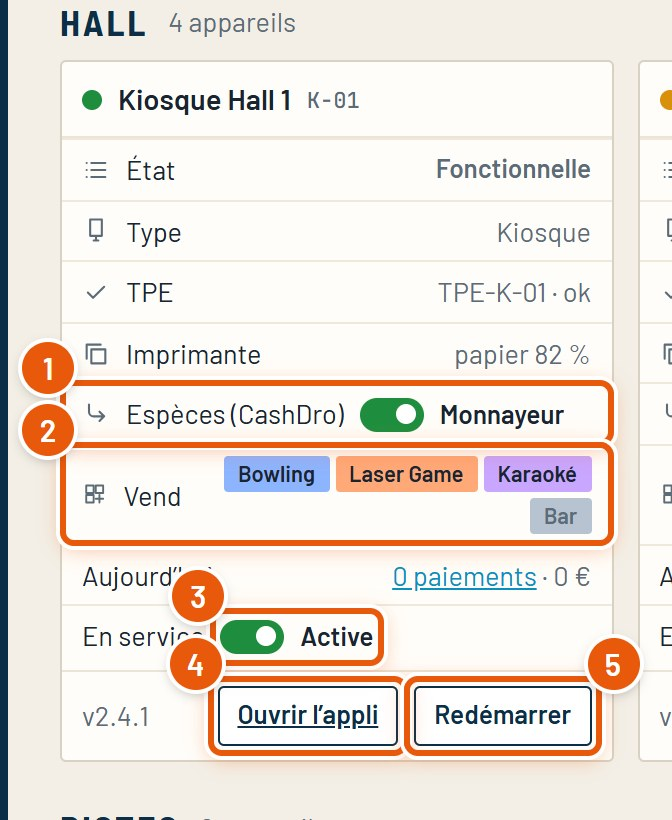
Le haut de chaque carte indique l’état (fonctionnelle, hors ligne depuis combien de temps), le terminal de paiement, le papier restant dans l’imprimante (en orange sous 15 %). Un point rouge signale un appareil hors ligne.
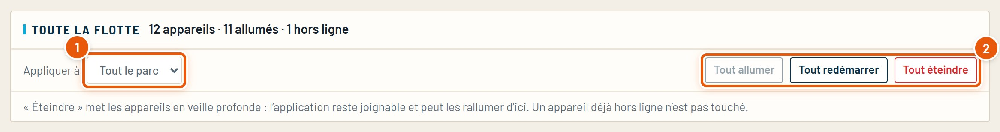
Le bouton Modifier le parc, en haut de l’écran, permet de renommer les bornes et les espaces, de déplacer une borne d’un espace à l’autre et de créer un espace (ex. Terrasse).
Gestion des bornes › Catalogue des bornes. Une ligne par borne, une colonne par activité : une case cochée, la borne la vend.
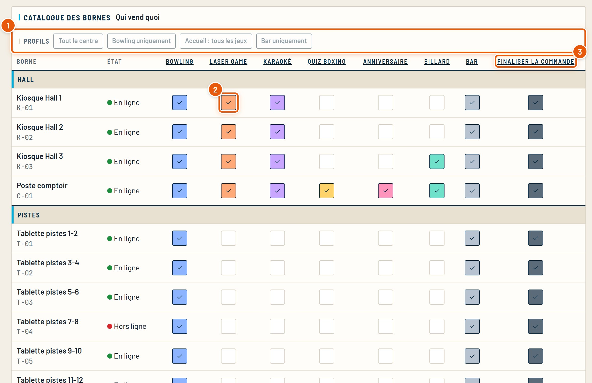
Gestion des bornes › Catalogue des bornes, bloc Disposition de l’accueil. Chaque borne, et le site, peut avoir son propre ordre.
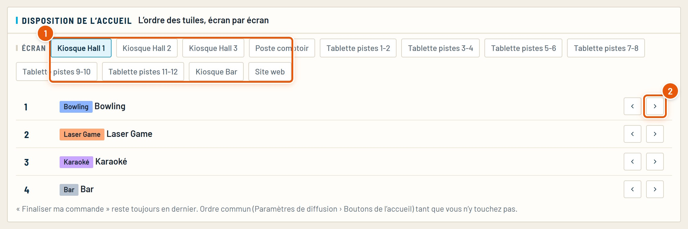
Tant qu’un écran n’a pas son ordre, il suit l’ordre commun (Paramétrage › Paramètres de diffusion › Boutons de l’accueil). « Revenir à l’ordre commun » efface l’ordre propre d’un écran.
Sandbox › Activités du centre › l’activité › bloc Module borne. Chaque page du parcours a ses textes, ses options et son style, avec la vraie borne en aperçu à droite.
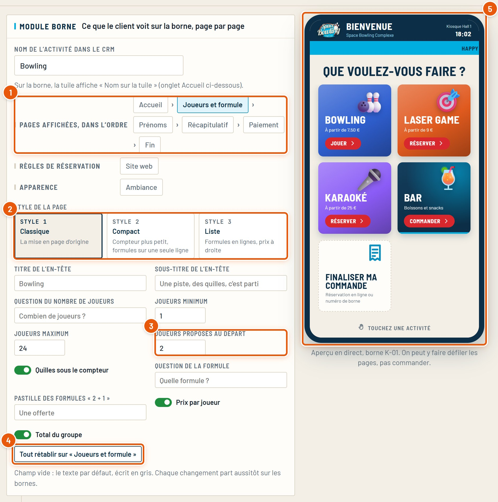
L’ordre des pages est fixe : il dépend du type d’activité. Une page vide (pas de tranche d’âge, pas d’option) est sautée toute seule.
Même bloc, groupe Apparence › Ambiance : les couleurs et le décor des pages de l’activité, jusqu’au paiement.
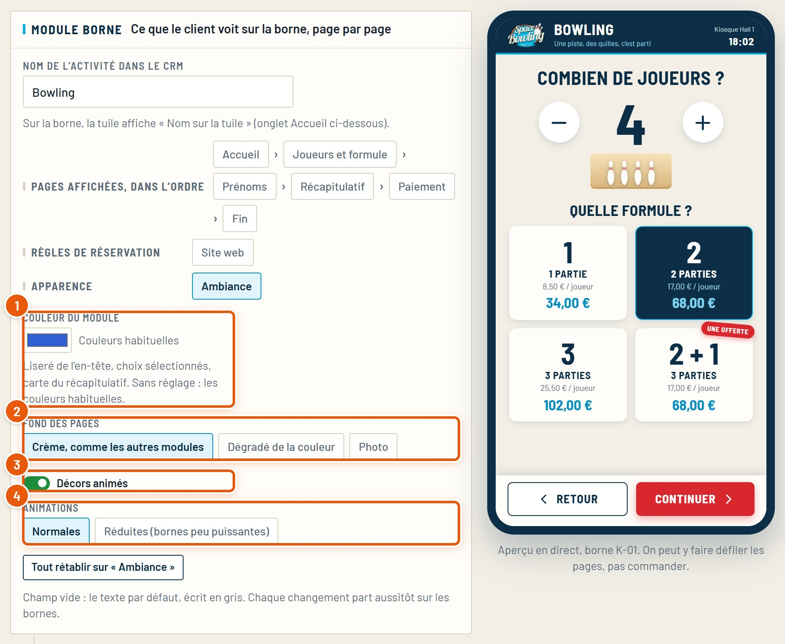
Les modules de réservation ont aussi un style Festif (ballons, couleurs vives) : c’est celui des anniversaires.
Paramétrage › Paramètres de diffusion. Ce que toutes les bornes affichent en commun.
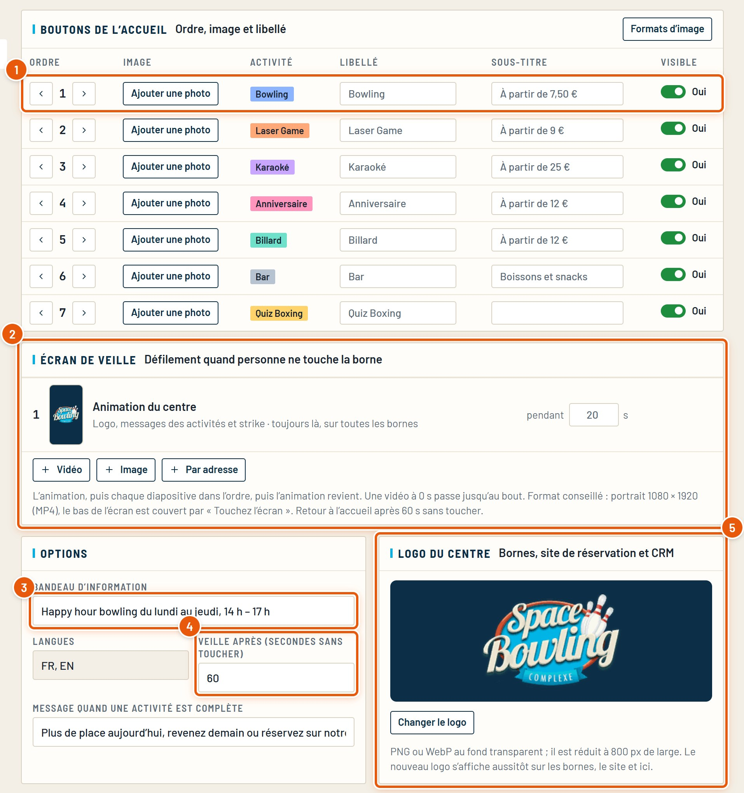
L’écran de veille commence toujours par l’animation du centre : le logo, les messages des activités, et une boule qui fait un strike. Les vidéos et images ajoutées passent ensuite, une par une, puis l’animation revient.
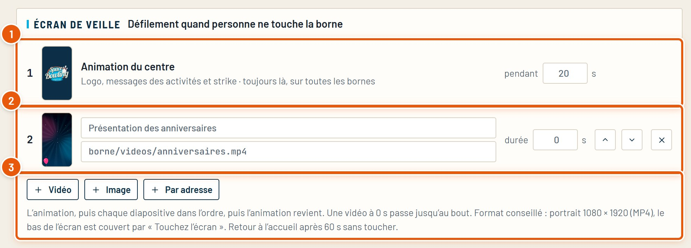
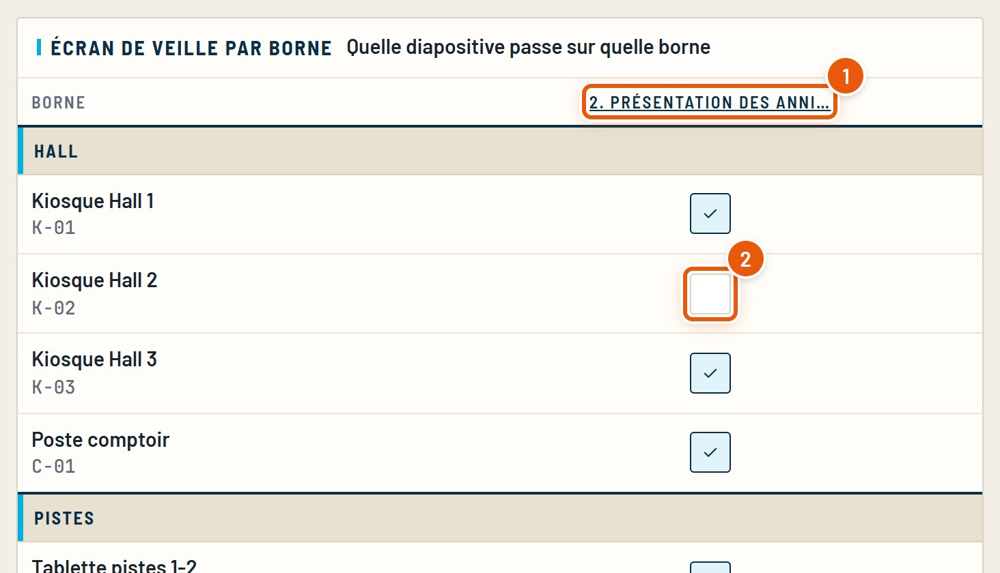
Les vidéos se préparent en portrait 1080 × 1920 (MP4). Le bas de l’écran est couvert par le bouton « Touchez l’écran pour commencer » : rien d’important à cet endroit.
Une vidéo prise sur le PC reste dans le navigateur où elle a été ajoutée. Pour toutes les bornes du centre, déposez-la sur le site (dossier borne/videos) et ajoutez-la « Par adresse ».
Carte bancaire sur le terminal, espèces sur le monnayeur (CashDro) quand la borne en a un, ticket CE ou code promo scanné. Le paiement est simulé tant que le matériel n’est pas branché.
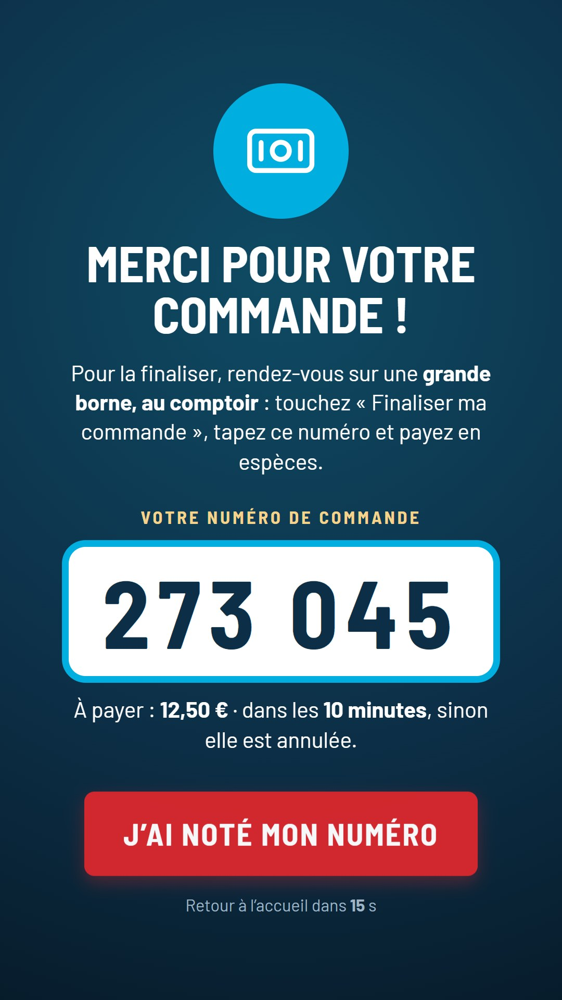
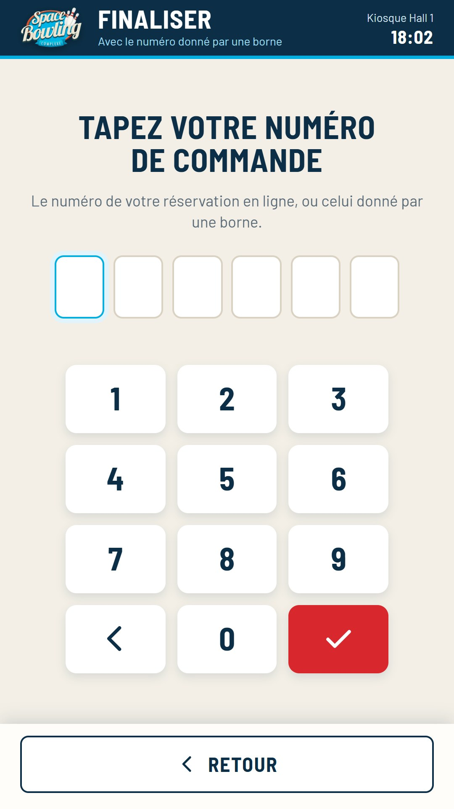
Ticket CE ou code promo : une troisième tuile au moment de payer. Le client scanne un ou plusieurs tickets ; le reste se paie par carte ou en espèces. Chaque ticket n’est accepté que pour l’activité de son lot. Détails : Guide - Tickets CE et QR codes.
Les textes de l’écran « Espèces au comptoir » et le délai (10 minutes par défaut) se règlent dans Sandbox › Bar › onglets Fin et Espèces au comptoir. Dans le CRM, ces commandes apparaissent « Attente espèces » (Bar › Commandes).
La tuile qui permet de payer plus tard, sur n’importe quelle borne, avec un numéro.
Les autres réservations (laser, karaoké, anniversaire…) se règlent à l’accueil : la borne le dit au client.
Si une borne perd le réseau, elle continue : la carte et les photos sont déjà en mémoire.
Rien n’est perdu : l’envoi au CRM se fait dans l’ordre, et une commande déjà reçue n’est jamais enregistrée deux fois. Les codes promo et tickets CE, eux, ne peuvent pas être vérifiés sans réseau.
Pour les clients des pistes qui préfèrent leur téléphone : un QR code (ou une puce NFC) sur chaque piste ouvre la carte du bar.
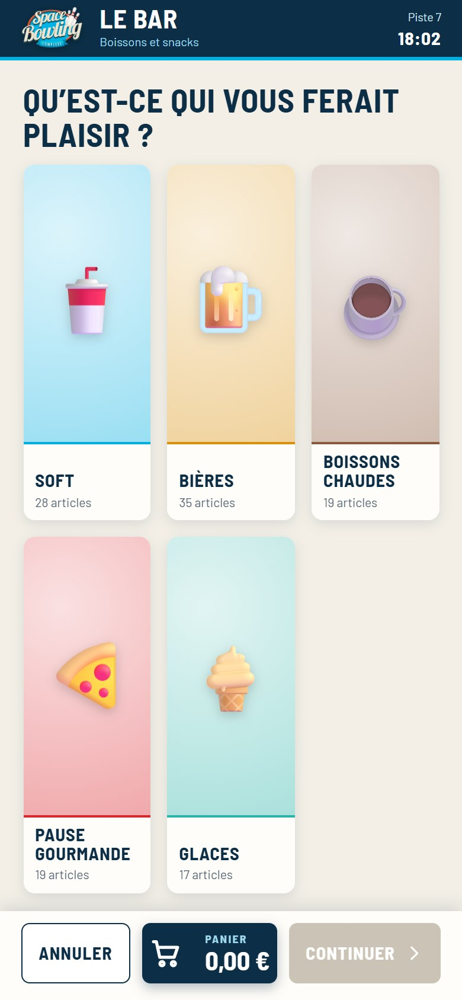
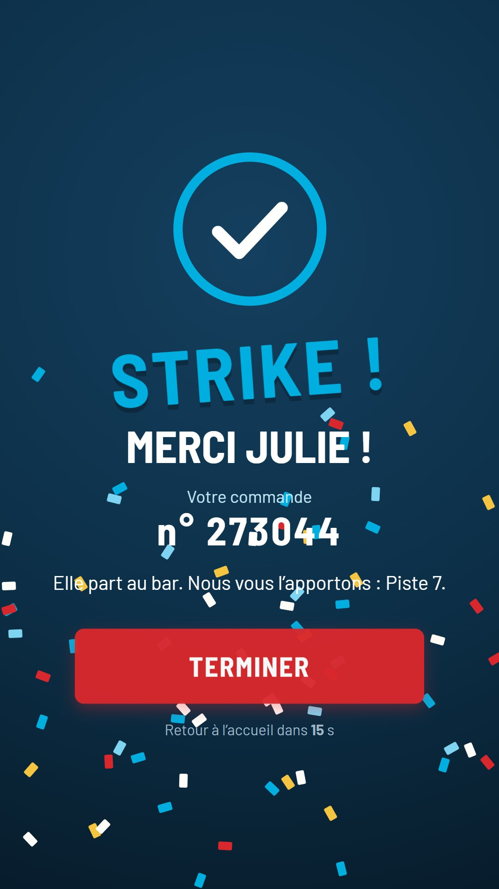
Les cas les plus courants, et où regarder.
| Ce que vous voyez | À vérifier |
|---|---|
| Une activité n’apparaît pas sur une borne | Sa case dans le Catalogue ; l’activité est visible et vendue sur « Bornes » ; sa tuile est visible (Paramètres de diffusion). |
| La borne reste sur l’écran de veille | Elle est « En service » (carte du Parc). |
| Pas de bouton Espèces sur une tablette | Normal hors bar : sans monnayeur, seul le bar propose les espèces (à payer au comptoir). |
| Un client ne retrouve pas sa commande | Le numéro (6 chiffres), le délai de 10 minutes pour les espèces, ou une réservation qui n’est pas du bowling (à régler à l’accueil). |
| Une borne affiche « hors ligne » dans le Parc | Son réseau. Elle continue de vendre ; ses commandes arriveront au retour du réseau. |
| Un texte ne change pas sur la borne | Le bon module et la bonne page dans la Sandbox ; un champ vide garde le texte d’origine. |
Tous les guides du CRM, refaits à partir du vrai logiciel. Ils se trouvent dans le dossier docs.